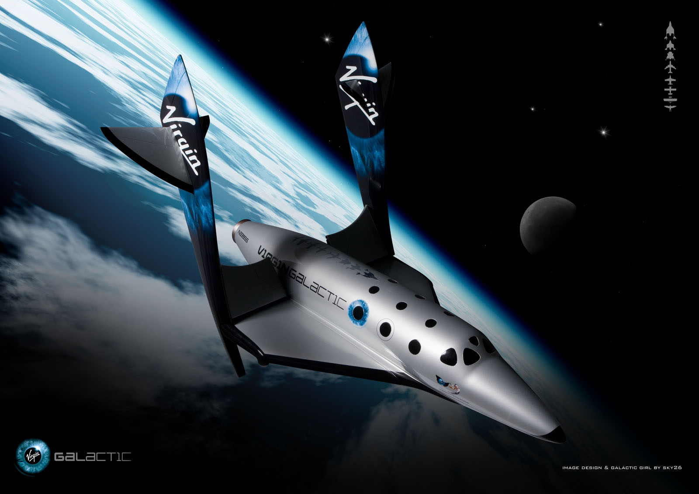
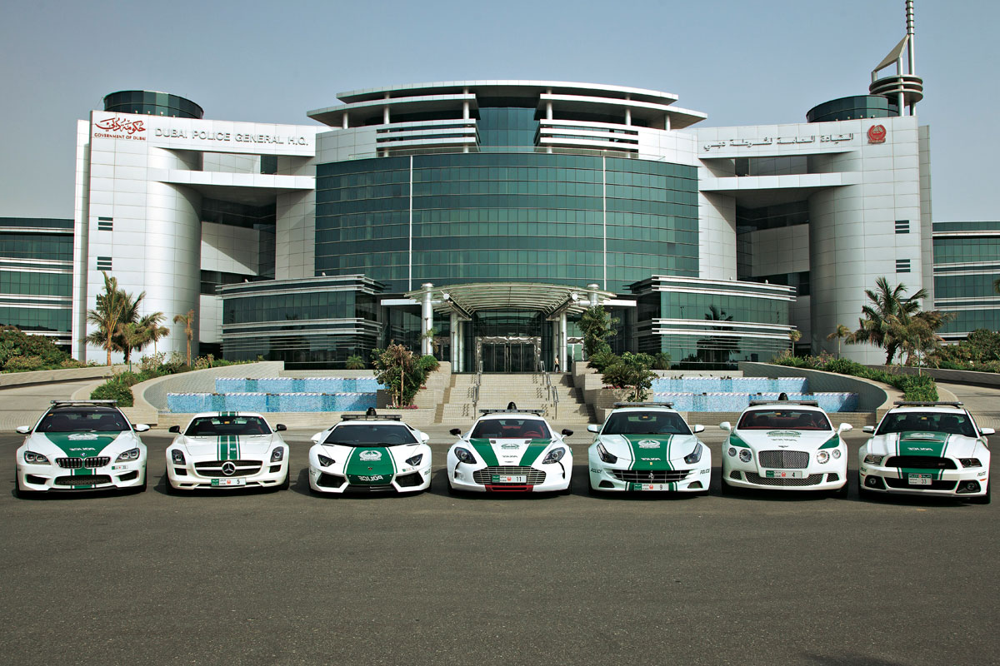
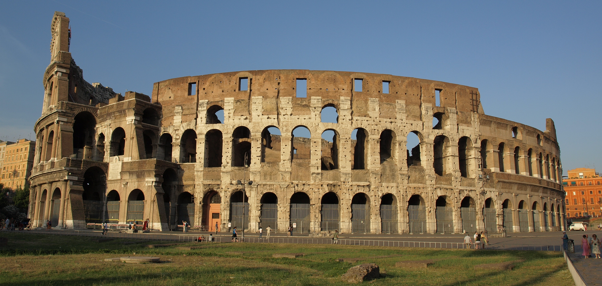

My Bucket List
- Owning my own house - Owning a property is an important part of one's life, not only showing independence and responsibility, but also a good investment for one's kids and family. I don't know where my future job will take me, but I want to be able to own a house and call that place home once I settle down.
- Going into Low Earth Orbit - Many companies are pushing for civial space travel, allowing regular people to travel to the edge of the Earth's atmosphere and get a glimpse of space. This would be an amazing experience, as no one before my generation has been able to experience zero gravity without training to become an astronaut, and would show me the entire world in one glimpse. 
- Going to Dubai - Dubai is the empitome of opulence and wealth, and as a car geek, Dubai is where you can see cars worth more than entire houses. Dubai also is a very rapidly growing city, and is developing very quickly, so it would be interesting to visit multiple times and see how the city has changed from before. 
- Seeing all 7 Wonders of the World - The world is an amazing place and I want to see the monuments which have been made to show these accomplishments. I have always wondered of the scale of the Great Pyramids, and want to go to the Colosseum in Rome to experience what it must have been like to watch a play 1500 years ago. 
- Spend a vacation in South East Asia - Since I have lived in California, most of my friends have been Asian, and this has had a large Asian influence on me. Now that I have been exposed to Asian culture, I want to travel to Korea and Japan and China with some of my friends to understand more of their mannerisms. Also Korea has the fastest Internet in the world.